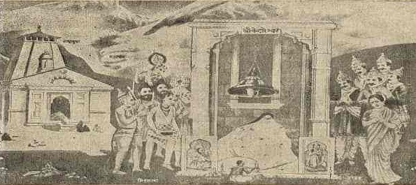

welcome to
kedarnath
"Say heaven or Kedarnath is the same thing"
History of Kedarnath Temple
Kedarnath Temple (Sanskrit:केदारनाथ मंदिर, IAST:Kēdārnāth Mandira, lit. 'temple of the lord of the field'), is a Hindu temple (shrine) dedicated to Shiva. Located on the Garhwal Himalayan range near the Mandakini river, Kedarnath is located in the state of Uttarakhand, India. Due to extreme weather conditions, the temple is open to the general public only between the months of April (Akshaya Tritiya) and November (Kartik Purnima, the autumn full moon). During the winters, the vigraha (deity) from Kedarnath temple is carried down to Ukhimath and where the deity is worshiped for the next six months. Kedarnath is seen as a homogenous form of Shiva, the 'Lord of Kedarkhand', the historical name of the region.The temple is not directly accessible by road and has to be reached by a 22 kilometres (14 mi) uphill trek from Gaurikund. Pony and manchan service is available to reach the structure.
According to Hindu legends, the temple was initially built by Pandavas, and is one of the twelve Jyotirlingas, the holiest Hindu shrines of Shiva.It is one of the 275 Paadal Petra Sthalams, expounded in Tevaram, a sacred Tamil saivite text written during 6th and 7th century by various saints called Nayanars. This temple is sung by Thirugnanasambandar and Sundarar in their Tevaram texts.Pandavas were supposed to have pleased Shiva by doing penance in Kedarnath.The temple is one of the four major sites in India's Chota Char Dham pilgrimage of Northern Himalayas. This temple is the highest among the 12 Jyotirlingas.Kedarnath was the worst affected area during the 2013 flash floods in North India. The temple complex, surrounding areas, and Kedarnath town suffered extensive damage, but the temple structure did not suffer any "major" damage, apart from a few cracks on one side of the four walls which was caused by the flowing debris from the higher mountains.A large rock among the debris acted as barrier, protecting the temple from the flood. The surrounding premises and other buildings in the market area were heavily damaged. It is one of the 275 Paadal Petra Sthalams, expounded in Tevaram, a sacred Tamil Shaivite text written during 6th and 7th century by various saints called Nayanars. This temple is sung by Thirugnanasambandar and Sundarar in their Tevaram texts.